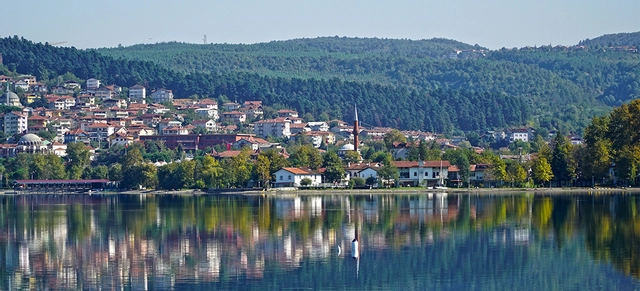
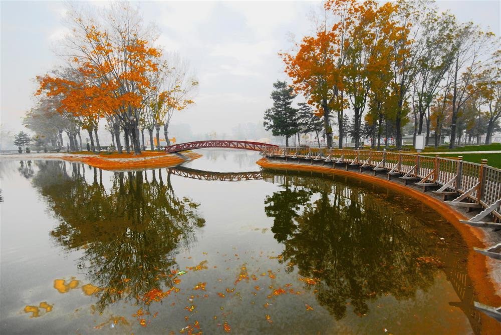
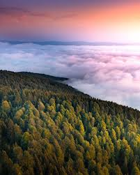
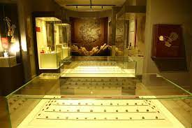
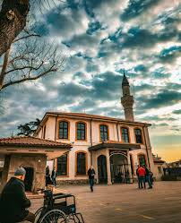
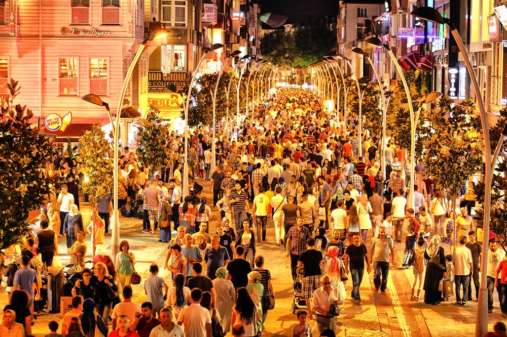
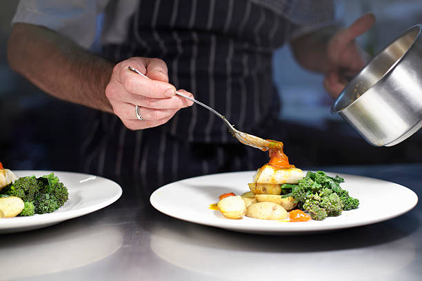
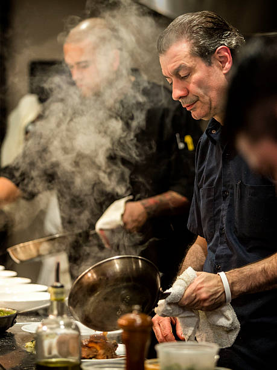
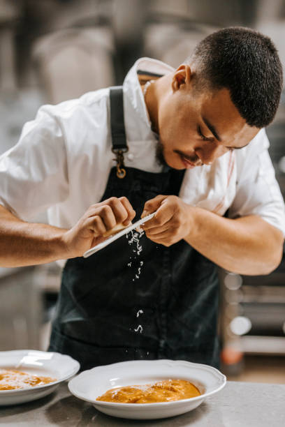

Taraklı Bulut Waterfall
Physical Accessibility for People with Disabilities: Limited
Access to the waterfall is difficult and the terrain is uneven.There may be difficulties for wheelchair users
Located in the Marmara Region of Turkey, Adapazarı is the central district of Sakarya and stands out with its rich history, natural beauty, and economic development. Known for its vibrant cultural fabric and strategic location, Adapazarı is built on the fertile lands of the Sakarya River. Having hosted various civilizations throughout history, the city has evolved into a dynamic and modern urban center. Let’s discover this unique city together!

Sakarya, located in the Marmara Region of Turkey, is a significant city center that stands out not only with its natural beauty but also with its historical and cultural richness. In particular, the districts of Adapazarı and Serdivan offer convenient urban transportation, vibrant social spaces, and a variety of activities appealing to different interests. From nature walks to cultural tours, from sports and recreational opportunities to local culinary experiences, the city provides a wide range of attractions suitable for visitors of all ages. With its peaceful atmosphere, growing urban structure, and welcoming residents, Sakarya is an ideal destination for both short visits and more comprehensive explorations. Through this platform, you can discover in detail the places to visit and activities to enjoy in the city center and surrounding areas of Sakarya.
An unforgettable experience for adrenaline enthusiasts! Glide over Serdivan Hill accompanied by professional instructors and create lasting memories. Soaring through the sky with a view of the city not only gives a sense of freedom but also becomes a memory you'll never forget.

Located in the city center of Adapazarı, Kent Park is an ideal urban getaway for both individual relaxation and family time, with its wide green spaces, walking paths, ornamental pool, and pond. You can sit at one of the park’s cafés and enjoy your tea or coffee in a nature-filled atmosphere.

Located in the Taraklı district of Sakarya, Bulut Waterfall is a unique escape for those who want to immerse themselves in nature. With its roaring waters, lush greenery, and clean air, it offers visitors a peaceful and calming atmosphere. Even the short nature walk required to reach the waterfall is an enjoyable experience in itself. It is one of the must-see natural attractions for photography enthusiasts, campers, and nature lovers.

Located in the Taraklı district of Sakarya, Bulut Waterfall is a unique escape for those who want to immerse themselves in nature. With its roaring waters, lush greenery, and clean air, it offers visitors a peaceful and calming atmosphere. Even the short nature walk required to reach the waterfall is an enjoyable experience in itself. It is one of the must-see natural attractions for photography enthusiasts, campers, and nature lovers.

Located in the city center of Sakarya, Orhan Mosque is a significant structure that stands out with its architectural elegance and historical background. Believed to have been built during the reign of Orhan Gazi in the 14th century, it is one of the oldest places of worship in Adapazarı. With its simple and peaceful atmosphere, it is an ideal stop during your city tour to take a short break and connect with history. The surrounding area also offers a pleasant walking experience with its historical bazaars and relaxing spots.

As one of the city’s most vibrant and visited locations, Çark Street is a must-see destination for anyone exploring Sakarya. Blending modern retail outlets with traditional artisan shops, the street offers a shopping experience that reflects both the city’s contemporary energy and its cultural roots.It’s the perfect place to pick up a unique souvenir, enjoy a local snack, or simply soak in the authentic spirit of Sakarya. Whether you visit during a busy weekday or a relaxed weekend, Çark Street welcomes you with its dynamic ambiance and local warmth.


Discover Çark Street: The Heart of Sakarya
Çark Street, one of the liveliest and most beloved areas in Sakarya, is a must-visit destination for
travelers eager to explore the city. This bustling avenue, where the heart of shopping beats and flavors
spill onto the streets, is a favorite gathering spot for both locals and visitors. Located right in the
city center, Çark Street masterfully blends traditional charm with modern life, offering a unique and
unforgettable experience.
If you arrive early in the morning, you can start your day with a freshly brewed Turkish coffee and
enjoy an authentic breakfast featuring olives, cheese, and fresh village bread. As the day progresses,
the street comes alive with more energy, inviting you to discover its array of street foods. In the
evening, under the soft glow of lights, you can savor traditional dishes and desserts that crown your
day perfectly.
Çark Street is not just a place for shopping and dining; it is a unique space where those seeking to
feel the spirit and warmth of Sakarya can have an unforgettable experience. Every corner, every flavor,
and every warm welcome reveals a different side of this beautiful city.
If your travels bring you to Sakarya, be sure to add Çark Street to your list of must-see places. A
memorable adventure filled with the energy of shopping, delicious local tastes, and heartfelt human
connections awaits you!
One of the must-try tastes when visiting Sakarya is the famous Adapazarı meatball. A long-standing symbol of the city’s culinary culture, this dish is simple yet satisfying—perfect for those seeking a hearty, no-fuss meal. Another highlight of Sakarya’s gastronomic identity is pumpkin dessert. Especially popular during the winter months, it is made by slowly cooking thick slices of pumpkin over low heat.This dessert offers a truly unique flavor experience for sweet lovers.

Physical Accessibility for People with Disabilities: Limited
Access to the waterfall is difficult and the terrain is uneven.There may be difficulties for wheelchair users
Physical Accessibility for People with Disabilities: Good
Flat and wide sidewalks, ramps, and accessible restrooms are available.
Physical Accessibility for People with Disabilities: Good
Easy access is provided through ramps and wide doors.
Physical Accessibility for People with Disabilities: Good
There is a ramp and a wheelchair-accessible elevator at the museum entrance.
Physical Accessibility for People with Disabilities: Good
The walking paths are wide and smooth, and there is a designated accessible parking area.
Physical Accessibility for People with Disabilities: Limited
Access is limited due to steep terrain and challenging paths.